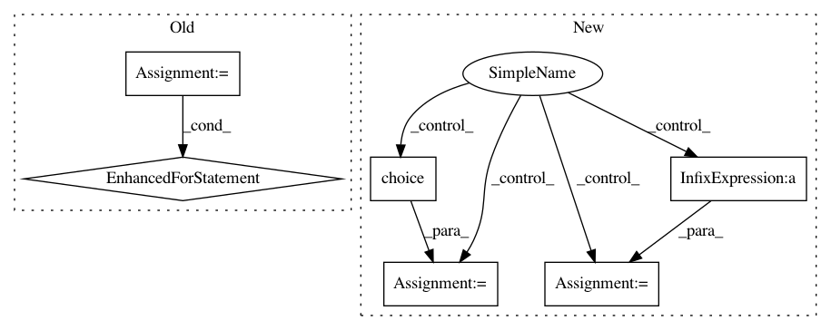

cd93c5446a236ed76456b188579e671d0619f333,scanpy/preprocessing/simple.py,,subsample,#Any#Any#Any#Any#,612
Before Change
adata = data.copy() if copy else data
_, smp_indices = utils.subsample(adata.X, subsample, seed)
adata.inplace_subset_smp(smp_indices)
for k in adata.smp_keys():
// TODO: this should also be taken into account when slicing
if k + "_masks" in adata.add:
adata.add[k + "_masks"] = adata[k + "_masks"][:, smp_indices]
return adata if copy else None
def zscore_deprecated(X):
After Change
np.random.seed(seed)
if isinstance(data, AnnData):
adata = data.copy() if copy else data
new_n_smps = int(fraction * adata.n_smps)
logg.m("... subsampled to {} data points".format(new_n_smps), v=4)
smp_indices = np.random.choice(adata.n_smps, size=new_n_smps, replace=False)
adata.inplace_subset_smp(smp_indices)
return adata if copy else None
else:
X = data
new_n_smps = int(fraction * X.shape[0])
logg.m("... subsampled to {} data points".format(new_n_smps), v=4)
smp_indices = np.random.choice(X.shape[0], size=new_n_smps, replace=False)
return X[smp_indices]
def zscore_deprecated(X):
In pattern: SUPERPATTERN
Frequency: 3
Non-data size: 6
Instances
Project Name: theislab/scanpy
Commit Name: cd93c5446a236ed76456b188579e671d0619f333
Time: 2017-07-21
Author: f.alex.wolf@gmx.de
File Name: scanpy/preprocessing/simple.py
Class Name:
Method Name: subsample
Project Name: ray-project/ray
Commit Name: c773824f4f22a14375a2451264d1b5708addd0f9
Time: 2020-06-03
Author: twakhare@gmail.com
File Name: rllib/models/tests/test_distributions.py
Class Name: TestDistributions
Method Name: _stability_test
Project Name: interactiveaudiolab/nussl
Commit Name: fa6f47e7aee228226421c52e61cce4e1ab4cc099
Time: 2020-03-15
Author: prem@u.northwestern.edu
File Name: tests/ml/test_loss.py
Class Name:
Method Name: test_permutation_invariant_loss_tf